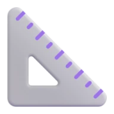
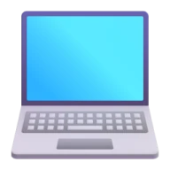
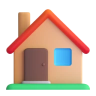

Nguồn và giấy phépCredits
Những thứ các trang Ramp này dùng mà Ramp không tự làm, và giấy phép của từng thứ.What these Ramp pages use that Ramp did not make, and the licence for each.
Biểu tượng 3D: Fluent Emoji3D icons: Fluent Emoji
Các biểu tượng 3D trên các trang này là Fluent Emoji của Microsoft, giấy phép MIT. Ramp lấy bản 3D của từng biểu tượng tại phiên bản 1ffb34c của kho mã, thu nhỏ còn 192 × 192 điểm ảnh, chuyển sang WebP giữ nền trong suốt và bỏ siêu dữ liệu. Ramp không vẽ lại hay sửa hình.The 3D icons on these pages are Microsoft's Fluent Emoji, MIT licence. Ramp took the 3D version of each icon at commit 1ffb34c of the repository, scaled it to 192 × 192 pixels, converted it to WebP with its transparent background, and removed its metadata. Ramp did not redraw or change the pictures.
github.com/microsoft/fluentui-emoji
 School
School Books
Books- Open book
 Microscope
Microscope Globe showing Asia-Australia
Globe showing Asia-Australia
Triangular ruler
Laptop- Compass
 Memo
Memo- Check mark button
 Speech balloon
Speech balloon Light bulb
Light bulb- Graduation cap
- Sparkles
 Shield
Shield- Headphone
- Bell

House
MIT License
Copyright (c) Microsoft Corporation.
Permission is hereby granted, free of charge, to any person obtaining a copy of this software and associated documentation files (the "Software"), to deal in the Software without restriction, including without limitation the rights to use, copy, modify, merge, publish, distribute, sublicense, and/or sell copies of the Software, and to permit persons to whom the Software is furnished to do so, subject to the following conditions:
The above copyright notice and this permission notice shall be included in all copies or substantial portions of the Software.
THE SOFTWARE IS PROVIDED "AS IS", WITHOUT WARRANTY OF ANY KIND, EXPRESS OR IMPLIED, INCLUDING BUT NOT LIMITED TO THE WARRANTIES OF MERCHANTABILITY, FITNESS FOR A PARTICULAR PURPOSE AND NONINFRINGEMENT. IN NO EVENT SHALL THE AUTHORS OR COPYRIGHT HOLDERS BE LIABLE FOR ANY CLAIM, DAMAGES OR OTHER LIABILITY, WHETHER IN AN ACTION OF CONTRACT, TORT OR OTHERWISE, ARISING FROM, OUT OF OR IN CONNECTION WITH THE SOFTWARE OR THE USE OR OTHER DEALINGS IN THE SOFTWARE
Biểu tượng nét: LucideLine icons: Lucide
Biểu tượng Lucide, giấy phép ISC.Lucide icons, ISC licence.
Copyright (c) 2026 Lucide Icons and Contributors. Permission to use, copy, modify, and/or distribute this software for any purpose with or without fee is hereby granted, provided that the above copyright notice and this permission notice appear in all copies. THE SOFTWARE IS PROVIDED "AS IS" AND THE AUTHOR DISCLAIMS ALL WARRANTIES WITH REGARD TO THIS SOFTWARE INCLUDING ALL IMPLIED WARRANTIES OF MERCHANTABILITY AND FITNESS. IN NO EVENT SHALL THE AUTHOR BE LIABLE FOR ANY SPECIAL, DIRECT, INDIRECT, OR CONSEQUENTIAL DAMAGES OR ANY DAMAGES WHATSOEVER RESULTING FROM LOSS OF USE, DATA OR PROFITS, WHETHER IN AN ACTION OF CONTRACT, NEGLIGENCE OR OTHER TORTIOUS ACTION, ARISING OUT OF OR IN CONNECTION WITH THE USE OR PERFORMANCE OF THIS SOFTWARE.
Một số biểu tượng ở đây (ví dụ arrow-right và log-in) bắt nguồn từ Feather, giấy phép MIT, bản quyền (c) 2013-present Cole Bemis.Some of the icons used here (arrow-right and log-in, for example) are derived from Feather, MIT licence, copyright (c) 2013-present Cole Bemis. Toàn văn giấy phépThe full licence text.
Phông chữFonts
Bricolage Grotesque (Mathieu Triay) cho tiêu đề và Be Vietnam Pro (Lâm Bảo, Tony Le, ViệtAnh Nguyễn) cho chữ thường, cả hai theo Giấy phép Phông chữ Mở SIL 1.1, tải từ Google Fonts.Bricolage Grotesque (Mathieu Triay) for headings and Be Vietnam Pro (Lâm Bảo, Tony Le, ViệtAnh Nguyễn) for text, both under the SIL Open Font Licence 1.1, loaded from Google Fonts. openfontlicense.org
Từ ví dụ của 44 âmExample words for the 44 sounds
Mỗi âm trong 44 âm phát từ ví dụ của nó: từ mà bảng âm của Ramp English hiển thị, bằng đúng đoạn âm thanh trong các bài học âm của Ramp. Đó là các đoạn âm thanh riêng của Ramp, do một giọng đọc máy giọng Anh Anh đọc: giọng máy, không phải bản ghi giọng của một người. 38 đoạn phục vụ 44 âm, vì sáu từ mang hai âm: big, cat, five, chair, dog và long.Each of the 44 sounds plays its example word: the word the Ramp English sound chart shows, in the very clip from Ramp's own sound lessons. These are Ramp's own clips, said by a British text-to-speech voice: a computer voice, not a recording of a person. 38 clips serve the 44 sounds, because six words show two sounds: big, cat, five, chair, dog and long.
Bản ghi nguyên âm tham khảoReference vowel recordings
Chín nguyên âm cũng có thể nghe riêng, từ các bản ghi mở về nguyên âm IPA trên Wikimedia Commons. Đó là mẫu tham khảo của các ký hiệu IPA, gần với nhưng không giống hẳn nguyên âm tiếng Anh Anh, và không phải âm thanh bài học của Ramp. Mỗi tệp MP3 ở đây được chuyển từ tệp Commons (một kênh, 64 kbps) để mọi trình duyệt đều phát được; mỗi tệp OGG là luồng âm thanh của tệp Commons đã bỏ siêu dữ liệu. Cả hai được chia sẻ theo giấy phép của tệp gốc.Nine vowels can also be heard alone, from open recordings of IPA vowels on Wikimedia Commons. They are reference samples of the IPA symbols, close to but not the same as the British English vowels, and they are not Ramp's lesson audio. Each MP3 here was converted from the Commons file (mono, 64 kbps) so that every browser can play it; each OGG is the Commons audio stream with its metadata removed. Both are shared under the licence of the original file.
| ÂmSound | Như trongAs in | Tệp CommonsCommons file | Tác giảAuthor | Giấy phépLicence | NguồnSource | Tệp ở đâyFiles here |
|---|---|---|---|---|---|---|
| iː | green | Close front unrounded vowel.ogg | Denelson83 | CC BY-SA 3.0 | Wikimedia Commons | mp3 · ogg |
| ɪ | big | Near-close near-front unrounded vowel.ogg | Denelson83 | CC BY-SA 3.0 | Wikimedia Commons | mp3 · ogg |
| e | bed | PR-open-mid front unrounded vowel.ogg | Peter Roach (User:RoachPeter) | CC BY-SA 4.0 | Wikimedia Commons | mp3 · ogg |
| æ | cat | PR-open front unrounded vowel.ogg | Peter Roach (User:RoachPeter) | CC BY-SA 4.0 | Wikimedia Commons | mp3 · ogg |
| ɑː | heart | Open back unrounded vowel.ogg | Denelson83 | CC BY-SA 3.0 | Wikimedia Commons | mp3 · ogg |
| ɒ | hot | PR-open back rounded vowel.ogg | Peter Roach (User:RoachPeter) | CC BY-SA 4.0 | Wikimedia Commons | mp3 · ogg |
| ɔː | door | PR-open-mid back rounded vowel.ogg | Peter Roach (User:RoachPeter) | CC BY-SA 4.0 | Wikimedia Commons | mp3 · ogg |
| ʊ | good | Near-close near-back rounded vowel.ogg | Denelson83 | CC BY-SA 3.0 | Wikimedia Commons | mp3 · ogg |
| uː | blue | Close back rounded vowel.ogg | Denelson83 | CC BY-SA 3.0 | Wikimedia Commons | mp3 · ogg |
IPA giọng Anh AnhBritish IPA
IPA trên thẻ từ của Ramp lấy từ Britfone 3.0.1 của Jose Llarena, giấy phép MIT, được viết lại bằng các ký hiệu mà sách giáo khoa Việt Nam in. Các trang này không kèm tệp Britfone nào.The IPA on Ramp's word cards comes from Britfone 3.0.1 by Jose Llarena, MIT licence, respelled in the symbols Vietnamese textbooks print. No Britfone file is shipped on these pages. NguồnSource.
The MIT License (MIT). Copyright (c) by 2017 Jose Llarena. Permission is hereby granted, free of charge, to any person obtaining a copy of this software and associated documentation files (the "Software"), to deal in the Software without restriction, including without limitation the rights to use, copy, modify, merge, publish, distribute, sublicense, and/or sell copies of the Software, and to permit persons to whom the Software is furnished to do so, subject to the following conditions: The above copyright notice and this permission notice shall be included in all copies or substantial portions of the Software. THE SOFTWARE IS PROVIDED "AS IS", WITHOUT WARRANTY OF ANY KIND, EXPRESS OR IMPLIED, INCLUDING BUT NOT LIMITED TO THE WARRANTIES OF MERCHANTABILITY, FITNESS FOR A PARTICULAR PURPOSE AND NONINFRINGEMENT. IN NO EVENT SHALL THE AUTHORS OR COPYRIGHT HOLDERS BE LIABLE FOR ANY CLAIM, DAMAGES OR OTHER LIABILITY, WHETHER IN AN ACTION OF CONTRACT, TORT OR OTHERWISE, ARISING FROM, OUT OF OR IN CONNECTION WITH THE SOFTWARE OR THE USE OR OTHER DEALINGS IN THE SOFTWARE.
Màn hình và hình vẽScreens and drawings
Mọi màn hình điện thoại và trình duyệt trên các trang này là ảnh chụp thật của Ramp, chỉ cắt khung, không vẽ đè. Tên, mã lớp và tên trường của tài khoản thử đã được cắt bỏ; các con số trong màn hình là dữ liệu thử, không phải kết quả. Con đường, những ngọn đồi và lá cờ được vẽ theo cảnh con đường trong chính ứng dụng.Every phone and browser screen on these pages is a real screenshot of Ramp, cropped and never painted over. Names, class codes and school names from test accounts are cropped out; numbers in the screens are test data, not results. The road, the hills and the flags are drawn from the app's own road scene.
Tiếng Việt trên các trang xem trước này là bản nháp do máy soạn và chưa được người duyệt.The Vietnamese on these preview pages is a machine draft that no person has reviewed yet.